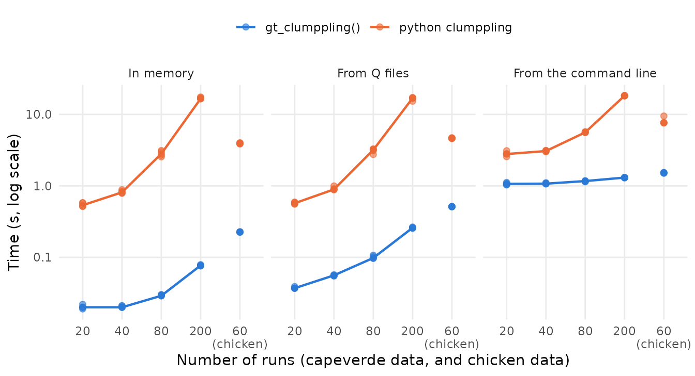

clumppling_benchmark.Rmdgt_clumppling() aligns the clusters of replicate runs of
ADMIXTURE-like analyses, and groups the runs into modes, with the method
of clumppling (Liu, Kopelman & Rosenberg 2024). Its R and C++ code
is ported, with modifications, from the python package clumppling
(version 2.0.10, by Xiran Liu), which previous versions of
tidygenclust ran through reticulate. This
article compares the two implementations: do they give the same results,
and how long do they take?
The comparison uses the two example datasets of the python
clumppling, which are also analysed in the paper that describes it (Liu,
Kopelman & Rosenberg 2024), and which tidygenclust
includes as gt_admix objects (in
inst/extdata):
gt_clumppling() took 0.077 s and the python implementation
17 s, about 215 times longer. On the 60 runs of the chicken data (600
individuals, K = 17, 19 and 21), they took 0.23 s and 3.9 s.gt_clumppling() itself.Both implementations were run with the default options
(use_rep = TRUE, merge = TRUE,
cd_method = "louvain", use_best_pair = TRUE)
and the same seed. Each implementation runs the same code whether the Q
matrices are in memory, read from Q files or the analysis is run from
the command line (see below), so the results were compared once, with
the Q matrices in memory:
| Dataset | Runs | Individuals | K | Modes (R) | Modes (python) | K with the same modes | Same representatives | Largest difference (modes) | Largest difference (costs) |
|---|---|---|---|---|---|---|---|---|---|
| capeverde_5 | 20 | 399 | 2, 3, 4, 5 | 9 | 9 | 2, 3, 4, 5 | yes | 2.2e-16 | 4.2e-17 |
| capeverde_10 | 40 | 399 | 2, 3, 4, 5 | 6 | 6 | 2, 3, 4, 5 | yes | 2.2e-16 | 2.8e-17 |
| capeverde_20 | 80 | 399 | 2, 3, 4, 5 | 6 | 6 | 2, 3, 4, 5 | yes | 2.2e-16 | 3.5e-18 |
| capeverde_50 | 200 | 399 | 2, 3, 4, 5 | 7 | 7 | 2, 3, 4, 5 | yes | 2.2e-16 | 4.2e-17 |
| chicken_20 | 60 | 600 | 17, 19, 21 | 8 | 7 | 21 | no | - | - |
Where the modes are the same, the remaining differences are rounding
errors. Grouping runs into modes uses community detection (the Louvain
method, by default), which draws random numbers.
gt_clumppling() draws them from R’s generator, so the same
seed does not give the same random choices as in python. This does not
change the modes when the community structure of the runs is clear, as
in the capeverde data. It can when the structure is ambiguous, as for K
= 17 and 19 in the chicken data, where the modes found by python itself
change with the seed. The test suite of tidygenclust checks
that, given the same modes, the two implementations give the same
results on these data.
The two implementations are typically used in different ways. In R,
the Q matrices are usually already in memory, in a gt_admix
object returned by gt_admixture() or by
tidypopgen::read_q_files(), and
gt_clumppling() returns its results as an R object. The
python clumppling is usually run as a command-line tool, which starts
python, loads its packages, reads the Q files, and writes its results to
files. Timing gt_clumppling() on a gt_admix
object against the command-line tool would flatter
gt_clumppling(). So we timed each implementation in three
settings:
reticulate) is not included.tidypopgen::read_q_files(). In python, they are read by
clumppling’s own parser, which writes the processed matrices to a
directory and reads them back, as the command-line tool does.Rscript,
which loads tidygenclust and saves the results with
saveRDS(). In python, it is the command-line tool of
clumppling, without figures (-v False).The last setting is the closest to the time a user waits, but the two
implementations still do slightly different things: the command-line
tool of clumppling writes more output than saveRDS() (the
processed Q files, the alignment of every pair of runs, the modes and
their statistics, and a log).

| Setting | Dataset | Runs | K | gt_clumppling() (s) | python (s) | Speed-up |
|---|---|---|---|---|---|---|
| In memory | capeverde_5 | 20 | 2, 3, 4, 5 | 0.02 | 0.54 | 27 |
| capeverde_10 | 40 | 2, 3, 4, 5 | 0.02 | 0.81 | 41 | |
| capeverde_20 | 80 | 2, 3, 4, 5 | 0.029 | 2.8 | 97 | |
| capeverde_50 | 200 | 2, 3, 4, 5 | 0.077 | 17 | 215 | |
| chicken_20 | 60 | 17, 19, 21 | 0.23 | 3.9 | 17 | |
| From Q files | capeverde_5 | 20 | 2, 3, 4, 5 | 0.037 | 0.57 | 15 |
| capeverde_10 | 40 | 2, 3, 4, 5 | 0.056 | 0.89 | 16 | |
| capeverde_20 | 80 | 2, 3, 4, 5 | 0.098 | 3.2 | 32 | |
| capeverde_50 | 200 | 2, 3, 4, 5 | 0.26 | 17 | 65 | |
| chicken_20 | 60 | 17, 19, 21 | 0.51 | 4.6 | 9 | |
| From the command line | capeverde_5 | 20 | 2, 3, 4, 5 | 1.1 | 2.8 | 3 |
| capeverde_10 | 40 | 2, 3, 4, 5 | 1.1 | 3.1 | 3 | |
| capeverde_20 | 80 | 2, 3, 4, 5 | 1.2 | 5.6 | 5 | |
| capeverde_50 | 200 | 2, 3, 4, 5 | 1.3 | 18 | 14 | |
| chicken_20 | 60 | 17, 19, 21 | 1.5 | 7.7 | 5 |
With many runs, most of the time goes into aligning every pair of
runs with the same K, so the time grows roughly with the square of the
number of runs for each K. For each pair, clumppling solves an integer
linear program with GLPK (through cvxpy), whereas
gt_clumppling() solves the same problem exactly as a linear
assignment problem, with the Hungarian algorithm in C++.
Reading the 200 capeverde Q files took about 0.18 s in R
(tidypopgen::read_q_files() reads each file with
read.table()), more than gt_clumppling()
itself, but little compared with the time of the python implementation,
whose own parser took about 0.29 s.
From the command line, starting R and loading
tidygenclust took about 0.99 s, and starting python and
loading clumppling (with numpy, cvxpy, cdlib and matplotlib) about 2.1 s
(medians of 5 runs, without doing anything else). This sets a floor to
the times of both implementations, which dominates with few runs. The
rest of the time from the command line is within about a second of the
time from Q files, so writing the results takes little time, although
clumppling writes more of them.
The benchmark is run with the script
vignettes/articles/code/clumppling_benchmark.R (in the
source code of the package), which saves its results in
vignettes/articles/data/clumppling_benchmark; this article
reads them from there. The code below is taken from that script.
The python implementation is run with the wrapper that previous
versions of tidygenclust used, which is now used to create
the reference results of the tests
(data-raw/clumppling/py_clumppling.R). It runs in the conda
environment created by
data-raw/clumppling/setup_clumppling_env.sh, with
clumppling 2.0.10 and pinned versions of its dependencies:
library(tidygenclust)
start_time <- Sys.time()
out_dir <- "data/clumppling_benchmark"
dir.create(out_dir, recursive = TRUE, showWarnings = FALSE)
# each implementation is timed n_repeats times on each dataset and in each
# setting, after a first run (not timed) that loads its code and gives the
# results compared
n_repeats <- 5
seed <- 1L
# py_clumppling() runs the python implementation on a gt_admix object, with
# the same arguments as gt_clumppling(); the wrapper is sourced from the
# root of the package, where it finds its python module
withr::with_dir(
"../..",
source("data-raw/clumppling/py_clumppling.R")
)
# the same python module, returning python objects instead of converting
# them to R objects, to time the python code alone
py_module <- reticulate::import_from_path(
"py_rclumppling",
path = "../../data-raw/clumppling",
convert = FALSE
)
# the executables of python (in the conda environment) and R, for the runs
# from the command line
python <- reticulate::py_exe()
rscript <- file.path(R.home("bin"), "Rscript")The datasets are the example datasets of clumppling (see the introduction), and subsets of the capeverde data with fewer runs for each K. Each is also written as a directory of Q files, and converted to numpy arrays:
# the example datasets of clumppling, included in tidygenclust: 200 runs of
# ADMIXTURE (50 for each K from 2 to 5) on the Cape Verde data of Verdu et
# al. (2017), with 399 individuals (capeverde), and 60 runs of STRUCTURE (20
# for each of K = 17, 19 and 21) on the chicken data of Rosenberg et al.
# (2001), with 600 chickens
capeverde <- readRDS(
system.file("extdata", "capeverde_admix.rds", package = "tidygenclust")
)
chicken <- readRDS(
system.file("extdata", "chicken_admix.rds", package = "tidygenclust")
)
# the first n runs of each K of a gt_admix object
first_runs <- function(x, n) {
keep <- sort(unlist(lapply(split(seq_along(x$k), x$k), utils::head, n)))
x$k <- x$k[keep]
x$Q <- x$Q[keep]
x
}
# capeverde with 5, 10, 20 and 50 runs for each K, and chicken
datasets <- list(
capeverde_5 = first_runs(capeverde, 5),
capeverde_10 = first_runs(capeverde, 10),
capeverde_20 = first_runs(capeverde, 20),
capeverde_50 = capeverde,
chicken_20 = chicken
)
# each dataset as a directory of Q files (one for each run, with one row for
# each individual and one column for each cluster, as written by ADMIXTURE),
# and as a python list of numpy arrays
write_q_files <- function(x, q_dir) {
dir.create(q_dir)
for (i in seq_along(x$Q)) {
utils::write.table(
as.matrix(x$Q[[i]]),
file.path(q_dir, sprintf("run%03d.Q", i)),
row.names = FALSE,
col.names = FALSE
)
}
q_dir
}
to_numpy <- function(x) {
reticulate::r_to_py(lapply(x$Q, function(q) {
reticulate::np_array(
matrix(as.numeric(q), nrow = nrow(q)),
dtype = "float64",
order = "C"
)
}))
}
inputs <- lapply(names(datasets), function(name) {
list(
admix = datasets[[name]],
q_dir = write_q_files(datasets[[name]], file.path(tempdir(), name)),
q_py = to_numpy(datasets[[name]])
)
})
names(inputs) <- names(datasets)The results of the two implementations are compared with:
# compare the results of the two implementations: their modes (the runs of
# each mode, overall and for each K), their representatives, and, if the
# modes are the same, the largest differences between their aligned modes
# and their costs across K
compare_results <- function(r, py) {
# the modes (named e.g. K2M1) of the values of K that match the pattern
modes_of <- function(res, pattern) {
modes <- res$mode_replicates[grep(pattern, names(res$mode_replicates))]
lapply(modes, as.integer)
}
same_modes <- identical(modes_of(r, ""), modes_of(py, ""))
same_modes_k <- Filter(function(k) {
pattern <- paste0("^K", k, "M")
identical(modes_of(r, pattern), modes_of(py, pattern))
}, r$K_range)
# (the elements of both lists are matched by name)
max_diff <- function(a, b) {
b <- b[names(a)]
max(abs(unlist(lapply(a, as.matrix)) - unlist(lapply(b, as.matrix))))
}
data.frame(
n_modes_r = length(r$mode_replicates),
n_modes_python = length(py$mode_replicates),
same_modes = same_modes,
same_modes_k = paste(same_modes_k, collapse = ", "),
same_representatives = identical(
r$mode_stats$Representative,
py$mode_stats$Representative
),
max_diff_aligned = if (same_modes) {
max_diff(r$aligned_modes, py$aligned_modes)
} else {
NA
},
max_diff_cost = if (same_modes) {
max_diff(r$cost_acrossK, py$cost_acrossK)
} else {
NA
}
)
}The runs that are timed, in each setting, are:
# run a command, stopping if it fails
run_command <- function(command, args) {
status <- system2(command, args, stdout = FALSE, stderr = FALSE)
if (status != 0) {
stop("Failed: ", command, " ", paste(args, collapse = " "))
}
}
# the timed runs of each implementation, in each setting, on an input (a
# dataset as a gt_admix object, a directory of Q files and numpy arrays)
run_r <- list(
# the Q matrices are in a gt_admix object
memory = function(input) {
gt_clumppling(input$admix, seed = seed)
},
# the Q files are read with tidypopgen::read_q_files()
files = function(input) {
gt_clumppling(tidypopgen::read_q_files(input$q_dir), seed = seed)
},
# a new R process loads tidygenclust, reads the Q files, and saves the
# results in an rds file
command_line = function(input) {
out <- tempfile(fileext = ".rds")
on.exit(unlink(out))
run_command(rscript, c("-e", shQuote(sprintf(
paste(
"library(tidygenclust);",
"res <- gt_clumppling(tidypopgen::read_q_files('%s'), seed = %d);",
"saveRDS(res, '%s')"
),
input$q_dir, seed, out
))))
}
)
run_python <- list(
# the Q matrices are numpy arrays (converted from R before the timing),
# and the results are python objects (not converted to R)
memory = function(input) {
py_module$clumppling_run(Q_list = input$q_py, random_seed = seed)
},
# the Q files are read by clumppling's own parser, which writes the
# processed matrices to a directory and reads them back
files = function(input) {
processed_dir <- tempfile()
on.exit(unlink(processed_dir, recursive = TRUE))
py_module$clumppling_run(
input_dir = input$q_dir,
processed_dir = processed_dir,
random_seed = seed
)
},
# the command-line tool of clumppling, without figures, which reads the Q
# files and writes its results to a directory
command_line = function(input) {
out <- tempfile()
on.exit(unlink(out, recursive = TRUE))
run_command(python, c(
"-m", "clumppling", "-i", shQuote(input$q_dir), "-o", shQuote(out),
"-f", "admixture", "-v", "False", "--random_seed", seed
))
}
)Each implementation is run on each dataset once in memory, to compare the results, and once from the Q files, and then timed 5 times in each setting:
timings <- list()
agreement <- list()
for (name in names(inputs)) {
input <- inputs[[name]]
x <- input$admix
message("Running ", name)
# a first run of each implementation in memory, compared, and a first run
# from the Q files, neither timed
res_r <- suppressMessages(gt_clumppling(x, seed = seed))
res_py <- py_clumppling(x, seed = seed)
agreement[[name]] <- data.frame(
dataset = name,
n_runs = length(x$Q),
n_individuals = nrow(x$Q[[1]]),
k_values = paste(sort(unique(x$k)), collapse = ", "),
compare_results(res_r, res_py)
)
invisible(suppressMessages(run_r$files(input)))
invisible(run_python$files(input))
# then n_repeats timed runs of each, in each setting
for (setting in names(run_r)) {
for (i in seq_len(n_repeats)) {
seconds_r <- system.time(
suppressMessages(run_r[[setting]](input))
)[["elapsed"]]
seconds_py <- system.time(run_python[[setting]](input))[["elapsed"]]
timings[[paste(name, setting, i)]] <- data.frame(
dataset = name,
setting = setting,
repeat_run = i,
implementation = c("r", "python"),
seconds = c(seconds_r, seconds_py)
)
}
}
}
timings <- do.call(rbind, timings)
agreement <- do.call(rbind, agreement)Finally, the time taken to start R or python and load the packages is timed on its own:
# the time taken to start R and load tidygenclust, and to start python and
# load the code of the command-line tool of clumppling
startup <- do.call(rbind, lapply(seq_len(n_repeats), function(i) {
data.frame(
repeat_run = i,
implementation = c("r", "python"),
seconds = c(
system.time(
run_command(rscript, c("-e", shQuote("library(tidygenclust)")))
)[["elapsed"]],
system.time(
run_command(python, c("-c", shQuote("import clumppling.__main__")))
)[["elapsed"]]
)
)
}))Install tidygenclust with R CMD INSTALL,
rather than loading it with devtools::load_all(), which
compiles its C++ code without optimisation. Create the conda environment
with the python implementation (from the root of the package):
or set CLUMPPLING_REFERENCE_ENV to the name of another
conda environment with the same versions of the python packages. Then
run, from vignettes/articles, on an otherwise idle
machine:
This takes a few minutes. Then render this article again.
Liu, X., Kopelman, N. M. & Rosenberg, N. A. (2024). Clumppling: cluster matching and permutation program with integer linear programming. Bioinformatics, 40, btad751.
Rosenberg, N. A., Burke, T., Elo, K., Feldman, M. W., Freidlin, P. J., Groenen, M. A. M., Hillel, J., Mäki-Tanila, A., Tixier-Boichard, M., Vignal, A., Wimmers, K. & Weigend, S. (2001). Empirical evaluation of genetic clustering methods using multilocus genotypes from 20 chicken breeds. Genetics, 159, 699-713.
Verdu, P., Jewett, E. M., Pemberton, T. J., Rosenberg, N. A. & Baptista, M. (2017). Parallel trajectories of genetic and linguistic admixture in a genetically admixed creole population. Current Biology, 27, 2529-2535.